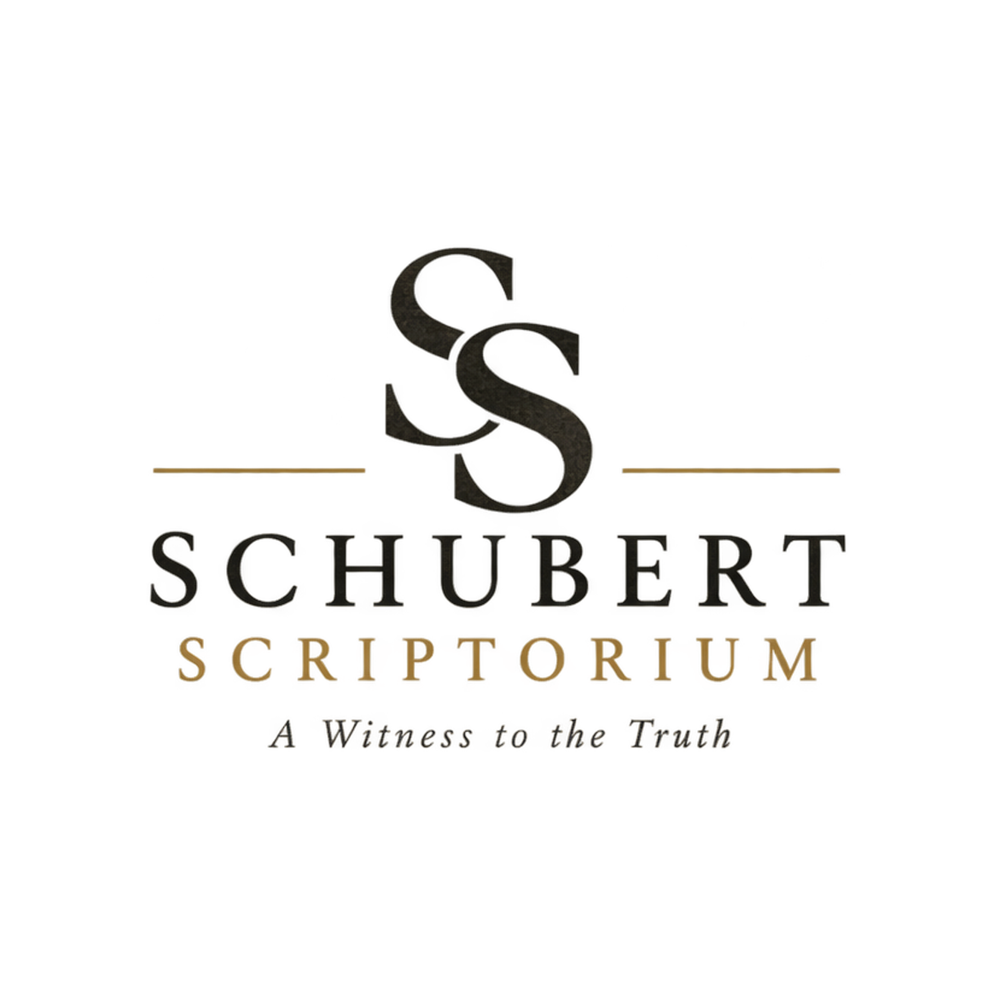
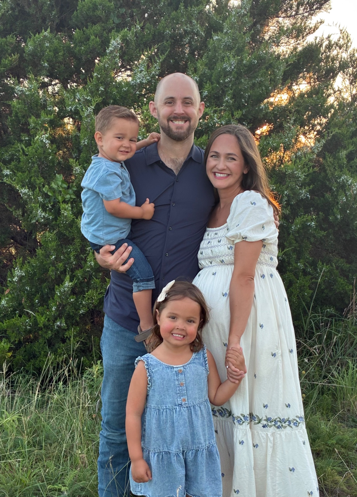

P52 is small, but its story is enormous. It provides a physical window into the early transmission of the Gospel of John and gives visitors an opportunity to examine an ancient New Testament witness with their own eyes. What makes this fragment especially compelling is the conversation it preserves: Jesus standing before Pontius Pilate, speaking about the very purpose for which He came into the world.
“For this I was born and for this I have come into the world—to bear witness to the truth.”
John 18:37
Pilate's reply is a question that has echoed through the centuries:
“What is truth?”
It is remarkable that these words are preserved on Papyrus 52, one of our earliest surviving witnesses to the New Testament. Nearly two thousand years later, this small fragment still preserves the testimony of Jesus Christ, who came into the world to bear witness to the truth—and who declared Himself to be the Way, the Truth, and the Life.

Hey there! My name is Chase Schubert, and I'm a lifelong student of Scripture, history, antique maps, manuscripts, and the stories that connect us to the past. With a degree in History Education from Abilene Christian University and several years as a U.S. history teacher, I've always had a passion for making history tangible, memorable, and meaningful.
But my fascination with biblical manuscripts goes beyond history—it's ultimately about the faithfulness of God.
I started Schubert Scriptorium to help bridge the gap between seeing a photograph of an ancient manuscript and experiencing a tangible piece of its history. These manuscripts are more than ink on papyrus or parchment. They are remarkable connections to the people, places, and generations of faithful believers who carefully copied, preserved, and passed down the words of Scripture.
My hope is that each handcrafted facsimile offers a small but powerful encounter with the past—a reminder of how faithfully God's Word has been transmitted across the centuries and why we can continue to trust the Scriptures we hold in our hands today.
Thanks for visiting my little corner of history. I'd love to connect with you!